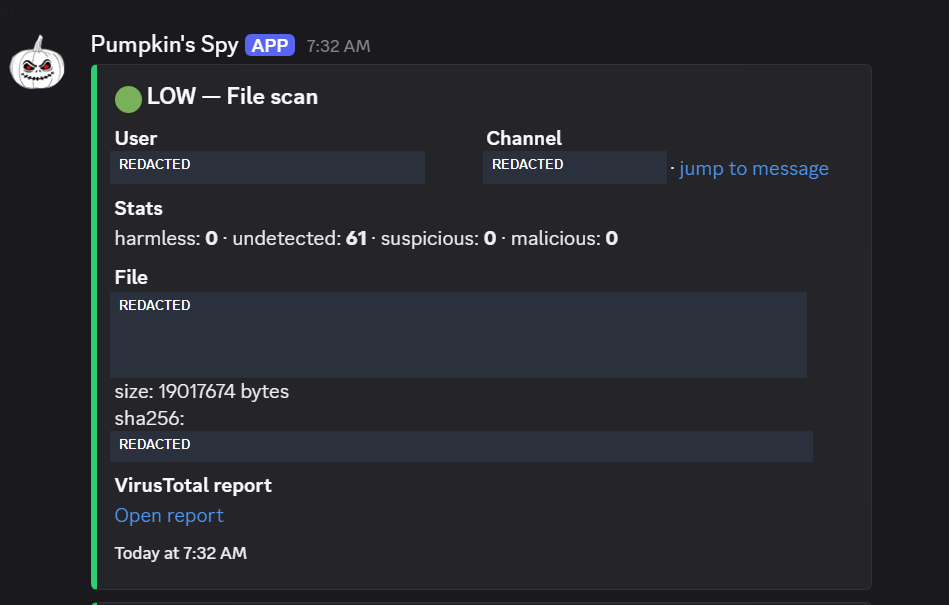

Link analysis
Extracts URLs from monitored messages and retrieves reputation and analysis results through VirusTotal.
COMMUNITY SECURITY / PUMPKIN'S SPY
Automated link and attachment analysis to help community moderators identify potentially harmful content.
OVERVIEW
This personal project adds a security monitoring layer to my Discord community. It monitors configured channels, analyzes shared links and file attachments through VirusTotal, and provides moderators with structured reports so they can make informed decisions.
Extracts URLs from monitored messages and retrieves reputation and analysis results through VirusTotal.
Uses SHA-256 file hashing and available VirusTotal reports to assess uploaded files, with new analysis when required.
Stores scan results in JSON, reuses eligible cached reports, and maintains different retention periods for clean and flagged results.
Handles newly posted and edited messages, helping moderators keep track of changing content.
ARCHITECTURE
The bot queues API requests to manage usage, reuses available analysis results, and reports scan failures in its logs.
MODERATOR EXPERIENCE
Reports contain a risk classification, detection statistics, message context, and a reference to the VirusTotal report. Cached results are identified in the embed.
Color-coded low, medium, and high classifications help moderators prioritize review.
Alerts are directed to a configured moderator channel. This is a monitoring and triage tool, not an automatic message removal or banning system.
A clean or undetected result does not guarantee a file or link is safe. Files and URLs sent for external analysis may be shared with a third-party service; confidential material should not be submitted.
OUTPUT DEMONSTRATION

This notification demonstrates the security monitoring feature of the same Pumpkin's Spy bot used for giveaway alerts. The report shows the risk level, engine detection statistics, file size, and a link to the VirusTotal report.
These figures describe this particular scan, not a guarantee of file safety.
CLOUD HOSTING
This service runs on the same personal OCI Free Tier compute instance as my giveaway bot, in Singapore, with Canonical Ubuntu 20.04 LTS as the host operating system. Both services use the same Discord bot identity, Pumpkin's Spy.
The bot uses the Node.js 20 Alpine base image, production dependencies, and a restart policy for service continuity. Its scan history is mounted from the host to retain data across container replacements.
I manage the instance and its containerized services from Windows Command Prompt using SSH key-based authentication, and monitor compute resources in OCI.

LEARNING OUTCOMES
This project demonstrates how I integrate a third-party threat intelligence service with a community platform and deploy a persistent, containerized monitoring service.